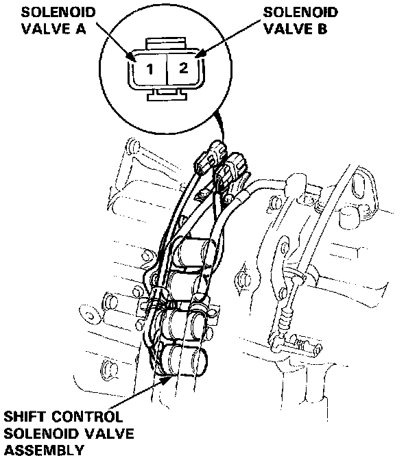

Shift Solenoid: Testing and Inspection
Shift Control Solenoid Valve A/B (Coupe Only)NOTE: Shift control solenoid valves A and B must be removed/replaced as an assembly.
1. Disconnect the connector from the shift control solenoid valve A/B.
NOTE: Do not remove the shift control solenoid valve A/B stay.

2. Measure the resistance between the No.1 terminal of the solenoid valve connector and body ground and between the No.2 terminal and body ground.
STANDARD: 16 - 20 ohms at 25°C
3. Replace the shift control solenoid valve assembly if the resistance is out of specification.
4. Connect the No.1 terminal of the solenoid valve connector to the battery positive terminal and the No.2 terminal to the battery positive terminal. A clicking sound should be heard each time the connection is made.
5. If not check for continuity between the harness and body ground.
6. Replace the shift control solenoid valve assembly if there is continuity between the harness and body ground.